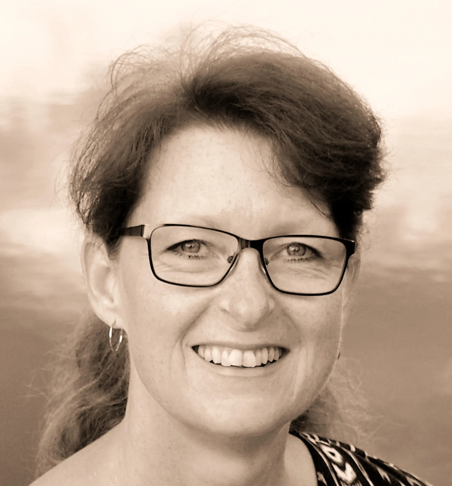

Arrangementarkiv · 2022
Viljens dynamikk i rusbehandling
Presentasjon av Saphiras doktorgradsforskning, rettet mot helsepersonell i rusfeltet og andre interesserte.

Om arrangementet
15. september 2022 · 19.00–20.00
Fossen 22, Moss
Dette er et tidligere arrangement. Påmelding er avsluttet.
Se original arrangementside